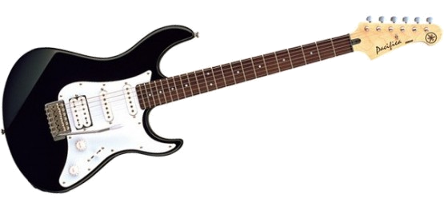

Filozoficznie o muzyce
Czym jest dla mnie muzyka?
Odzwierciedleniem pulsu mojego serca w zależności od odsłuchiwanego utworu, integralną częścią mojej duszy w której zawsze coś gra... zawsze. Jest łamaczem barier, moją drugą naturą z którą muszę i chcę sie regularnie łączyć aby zachować wewnętrzną harmonię. Jest przyjacielem, którego nie muszę widzieć, a wystarczy abym wysłuchał co ma mi do powiedzenia. Jest tym co zrusza kamienie i uspokaja morza.
Od zawsze uwielbiałem muzykę. W moim domu rodzinnym była w zasadzie na porządku dziennym. Zespoły tak lubiane przez ojca, za małolata dla mnie nie do zaakceptowania, z czasem sam zacząłem doceniać i dziś są podstawą mojej audiobiblioteczki. Wykształcenie muzyczne oraz doświadczenie jako nauczycielki muzyki oraz plastyki, niewątpliwie także wpłynęło na przejęcie przeze mnie matczynej pasji i wyczucia na emanującą wokół nas, pełną gamę dźwięków.
Muzyka była ze mną gdy potrzebowałem jej w chwilach słabości, smutku, mobilizacji do działania, pokonywania własnych słabości. Dzięki niej potrafię zrobić rzeczy, których "na sucho" bym się nie podjął, albo nie doprowadził do końca w swoim życiu. Muzyka dawała mi od zawsze energię i poprawiała samopoczucie. Sprawia, że potrafię dzięki niej stanąć na nogi w realnym świecie jak i pobujać w obłokach, gdy o czymś marzę albo planuję kolejne wielkie rzeczy w życiu. Biegnąc, jadąc rowerem, pociągiem, autem, w pracy jeżeli moje zajęcie wymaga właśnie wejścia w świat większego poziomu kreatywności.
Spróbuj przemysleć czym dla Ciebie jest muzyka. Możemy byc zgodni w tej materii, ale też możemy czerpać z niej zupełnie inne dobra. Pamiętaj, że żadne z nas się nie myli.
Moja gitara
Wiele lat jedynie słuchałem muzyki, aż coś we mnie pękło i postanowiłem sam coś stworzyć. Nie poszedłem standardową drogą, i nie kupiłem najpierw "klasyka" jak nakazuje tradycyjne "Hello World" gitarowego świata. Od zawsze uwielbiałem dźwięk gitary elektrycznej i taką też (po wielomiesięcznych przeszukiwaniach forum, gazet branżowych i opinii znajomych) nabyłem. Moja Yamaha Pacifica 212VFM - idealna na lata dla świeżaka jak i średniozaawansowanego gitarzysty. Póki co, nauka gry na niej to sama przyjemność.
Gitara elektryczna nie jest samotnikiem, potrzebuje do dzielenia się ze światem swoimi dźwiękami... wzmacniacza! - kombajnu dającego jej moc. Mój wybór padł na sprawdzony przez kolegę i polecany przez gitarzystów, używany ale w super formie, juz dawno niedostępny model Roland Cube 30X.

Moja Kochana Żona, wiedząc jak bardzo chciałem zacząć sam komponować, bardzo umiliła mi ten proces. Nie będąc obeznana zupełnie w temacie, poświęciła czas, skontaktowała się z wieloma ludźmi i skompletowała dla mnie 12 różnych kostek do gry. Materiały, kształty, kolory, cechy indywidualne charakterystyczne dla każdej oddzielnie. Jedna z nich jest naszyjnikiem, który z dumą noszę.
Moje ulubione utwory
Pasjonatem każdego rodzaju muzyki nie jestem, ale z drugiej strony nie mogę powiedzieć, że z każdego jej rodzaju nie chłonę jakiejś ciekawej cząstki do mojego życia. Czasem jeden człowiek może cieszyć się z muzyki, stworzonej na dwa skrajne sposoby. Z wielu utworów czerpię energię, ale poniżej zamieszczam listę moich ulubionych pozycji:
- Fall out boy - Centuries
- S. Ingrosso, T. Trash, J. Martin - Reload
- Linkin Park - Numb
- Linkin Park - Faint
- Arctic Monkeys - Do I wanna know
- Killer - Naughty boy
- Metallica - For whom the bells tolls
- U2 - Thrill me hold me kiss me kil me
- RHCP - Can't stop
- RHCP - Under the bridge
- RHCP - Californication
- Skrillex - Bangarang
- R.E.M. - Losing my religion
- Donkey boy - Ambitions
- Mortal Kombat Theme
- Matrix soundtrack - Clubbed to death
Oczywiście mam tych utworów w głowie dziesiątki, a z każdym z nich wiążą się określone sytuacje, nastroje, przygody i epizody życia, ale aby je poznać, wystarczy chwilę ze mną poprzebywać :)
Przydatne forum muzyczne
Wybierając sprzęt, czy też zapoznając się w ogóle z muzyką od strony technicznej, wspomagałem się głównie opinią znajomych, porównywaniem recenzji sprzętu, oglądając setki różnojęzycznych filmików na YouTube oraz klasycznym "paczaniem" i macaniem sprzętu, zawracając przy tym głowę niejednemu biednemu sprzedawcy na danej zmianie.
Nie zmienia to faktu, że najszybszym źródłem informacji są gotowe setki tematów na forach dyskusyjnych, zapełniane przez juniorów, regularów, seniorów i arcymagów sztuki gitarowej. Będąc szczerym, ograniczyłem sie do dwóch forum, ponieważ odpowiedzi na moje pytania były tam udzielanie najsprawniej, jak i sam sposób wypowiedzi user'ów był na optymalnym - jak na cyfrowy świat - poziomie. A były to:
Z nich własnie zbierałem najszybciej brakujące mi do podjęcia decyzji informacje. Poukładane bardzo logicznie działy i sektory obu forum, pomogły mi sprawnie pokonać pierwsze kroki w gitarowym świecie.